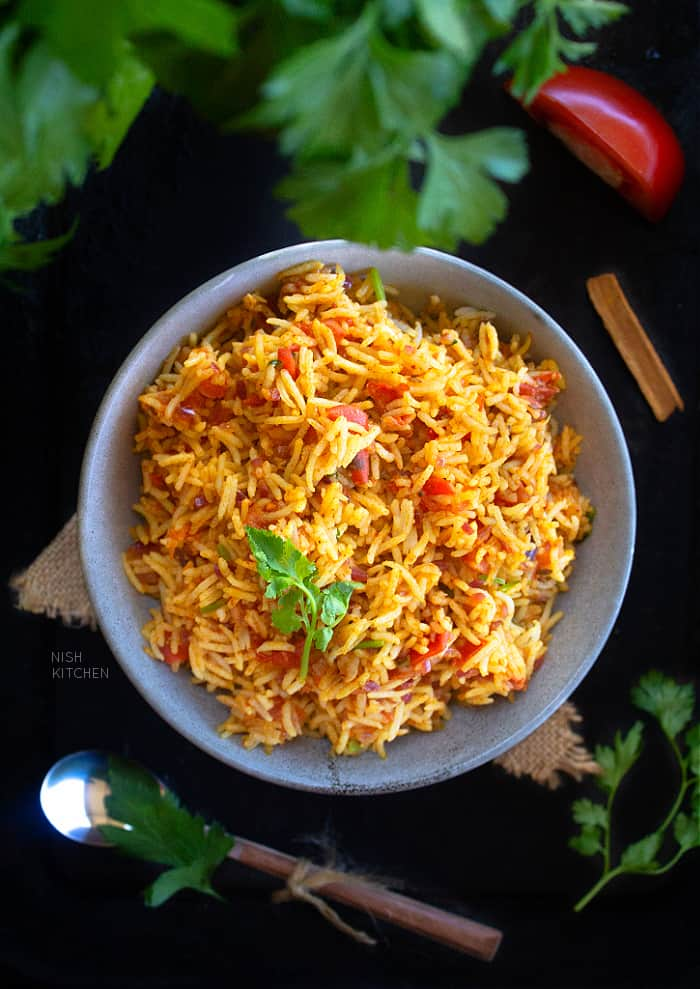

Tomato Rice

Description
Tomato Rice is a quick and easy dish featuring aromatic basmati
rice cooked with tomatoes and spices. It’s a flavorful and satisfying meal on its own.
Ingredients
Here's a detailed recipe for Tomato Rice, with all the ingredients listed in precise measurements:
- 1 cup basmati rice
- 2 medium tomatoes
- 1 tablespoon oil
- 1/2 teaspoon cumin seeds
- 1/2 teaspoon turmeric powder
- Salt to taste
- 1/2 teaspoon red chili powder
- Fresh coriander or mint leaves (optional for garnish)
Steps
- Wash and soak the rice for 15-20 minutes, then drain.
- Chop the tomatoes into small pieces.
- Heat oil in a pan, add cumin seeds, and let them sizzle.
- Add the chopped tomatoes, turmeric powder, red chili powder, and salt.
- Cook until tomatoes soften and oil starts separating.
- Add the soaked rice and 2 cups of water.
- Bring to a boil, then reduce the heat, cover, and simmer until the rice is cooked and water is absorbed.
- Garnish with fresh coriander or mint leaves if desired and serve warm.
Enjoy your flavorful Tomato Rice!